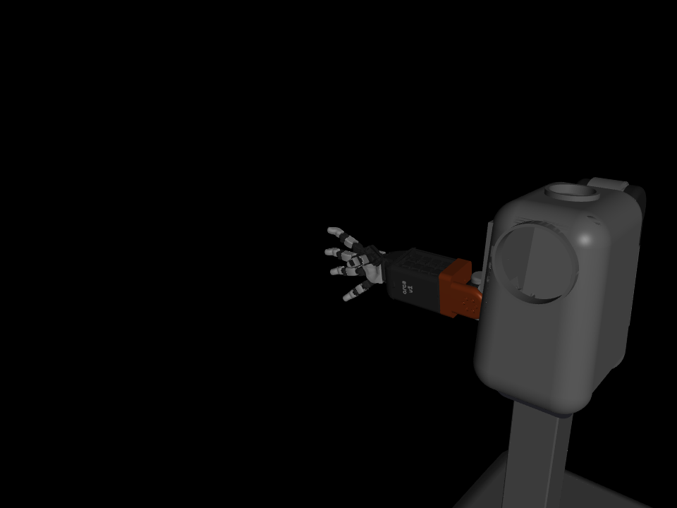
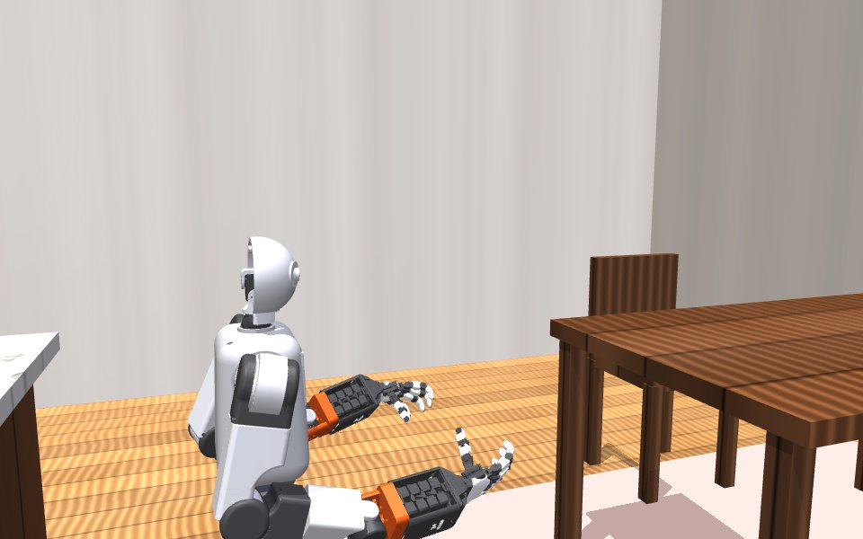
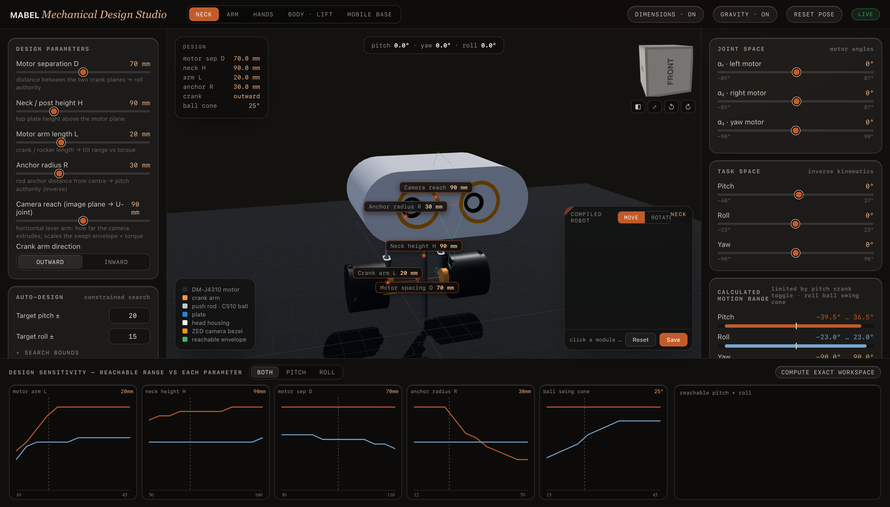
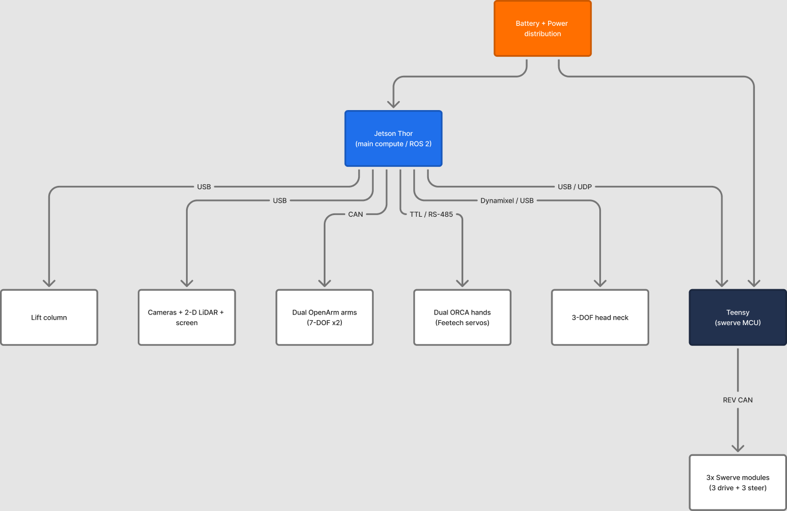
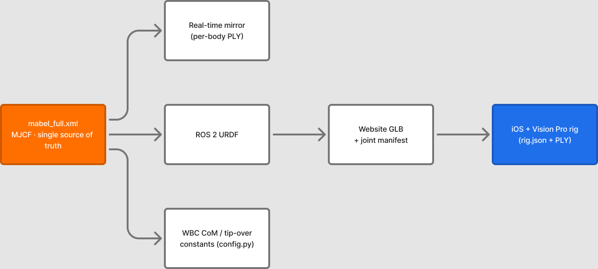
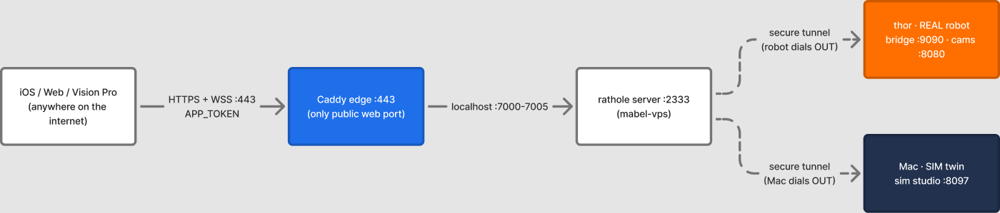
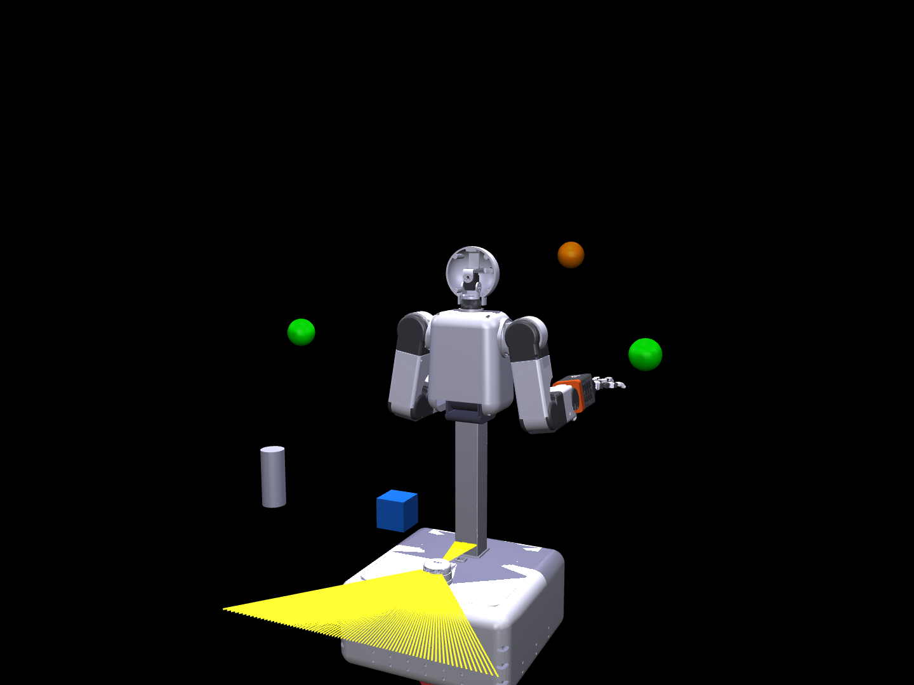

From an empty bench to a robot you can teleoperate from an iPhone, a browser, or an Apple Vision Pro — and a full digital twin you can run with no hardware at all. Twelve stages, every command, nothing hand-waved.
The MABEL digital twin — every subsystem, before a single motor arrives
How this guide works
One repo. Sim first.
MABEL is a monorepo — hardware, firmware, simulation, teleop, and learning together. You don't need any hardware to start: run the whole robot in simulation today, add real parts later.
Run it in sim now — Software → Run Your Own Server → Sim
The one rule that keeps MABEL honest. The MuJoCo model mabel_full.xml is the single source of truth for the body. The ROS URDF, web model, iOS/Vision Pro rigs, and the tip-over constants are all generated from it — regenerate them after any geometry change (see §8).
01
Bill of Materials.
Commodity smart actuators, off-the-shelf compute, and two custom PCBs for base and body power/bus routing. 56 functional DOF, 59 motors, all arm/body/base motors on one 1 Mbit/s bus.
Before you buy: the fully itemized, costed BOM is now published — 57 lines with vendors, part numbers and prices, four build scenarios from $7,852 to $12,874, and an explicit list of what it does not cover. The actuator counts below match it. Prices move; re-check before ordering.
Subsystem
Actuator
Qty
Bus
Swerve drive
REV NEO
3
CAN (REV/FRC)
Swerve steer
REV NEO 550
3
CAN
Swerve controllers
REV SPARK MAX / Flex
6
CAN
Lift
Brushed DC + leadscrew (BTS7960, Pico)
1
USB
Torso pitch
DaMiao DM-J10422P · 400 N·m
1
CAN
Arm shoulders
DaMiao DM-J8009P · 40 N·m
4
CAN
Shoulder-roll + elbow
DaMiao DM-J4340 · 27 N·m
4
CAN
Arm wrists
DaMiao DM-J4310 · 7–10 N·m
6
CAN
Hands
Feetech HLS3915 ×16 + HLS3930 ×1 / hand
34
1 MHz TTL
Neck yaw
DaMiao DM-J4310 · 3 N·m
1
CAN
Neck roll + pitch
Dynamixel XC330-T181
2
1 Mbaud TTL
Every actuator above appears as a priced line on the bill of materials: 14 DAMIAO arm actuators ($2,181), 34 Feetech hand servos ($1,234), 3 MAXSwerve modules with motors and controllers ($1,673).
Sensing
4 cameras + LiDAR
ZED Mini (eyes), RealSense D435i (front/chest), 2× RealSense D405 wrist cams, RPLIDAR A2M12. All on USB 3 — the bandwidth budget is the real constraint, not the port count.
Compute
Jetson Thor
Main compute + ROS 2. A Teensy 4.1 runs the swerve base; a Raspberry Pi Pico runs the lift.
Structure
3D-printed shells
≈ 2.1 kg PETG/ABS, ~36 h print. Meshes generated from the MJCF; the neck is fully published in hardware/neck_studio/.
02
Before You Start.
You can do everything up to real hardware on a Mac alone — ROS 2 is only needed on the robot.
macOS laptop → runs the full simulation stack
Ubuntu 22.04 + ROS 2 on Jetson Thor → runs the real robot
Skills: basic 3D printing, a terminal, light electronics
THE GOLDEN RULES
Simulate first — prove every motion in the twin
One source of truth — the MJCF defines the body
Power up current-limited, always
Know your stop before energizing anything
03
Safety first.
MABEL is a 62 kg machine with 400 N·m in its torso. Every safeguard below is real and lives in the code.
Stop
E-stop, everywhere
Any client sends estop; the bridge zeros all commands and latches stopped. A hardware E-stop de-energizes actuators independently of the host.
Watchdog
Dead-command safety
No fresh command in 0.3 s → drive zeros. Lose the Teensy heartbeat → controllers disable in ~150 ms.
Limits
Never tip
A ZMP tip-over model bounds base speed/accel from the measured CoM. Self-collision avoidance (CBF-QP) keeps arms out of each other.
Control
One driver
A single-driver lock means two operators can't fight. Lost hand tracking holds pose instead of extrapolating.
04
Hardware Assembly.
Assemble from the ground up — each stage gives the next something to bolt onto. Print the shells first (~36 h) while you build the kits.
The seven modules below are the summary. Assembly has the exploded views, part manifests, and numbered steps for each one.
Swerve Base
3× MAXSwerve · Teensy · CAN IDs 1–6
Three delta-layout modules on REV SPARK controllers give full holonomic motion. Daisy-chain the CAN bus with 120 Ω terminators; seat the Teensy and Jetson in the compute bay.
Lift Column
DC + leadscrew · RPi Pico
A cascaded loop on the Pico closes position at 100 Hz over USB serial. Home it with nothing mounted first.
Torso
DM-J10422P · 400 N·m · body CAN
The strongest joint on the robot leans the whole upper body. Carries both arm mounts and the 13" screen.
Arms ×2
7-DOF OpenArm · DaMiao MIT · can0 / can1
Build link-by-link from the shoulder; assign IDs 1–7 per arm one motor at a time; set each zero at a known pose.
ORCA Hands ×2
17-DOF · Feetech TTL
Tendon-driven dexterous hands. Tension the tendons before calibrating; iterate until no slack.
Head & Neck
3× DM-J4310 · parallel RSSR
A parallel pair drives pitch + roll, a third twists yaw. The one fully-published subassembly — CAD in neck_studio/.
Sensors
ZED · RealSense · wrist cams · LiDAR
Pin the two identical wrist cams by hub port; keep them on one powered USB-3 hub at 640×480.

7-DOF arm + ORCA hand

17-DOF ORCA hand

Parametric neck studio
05
Electronics & Wiring.
One host owns every device: a single hardware_bridge process opens every bus; ROS is only a client.

Bus topology · Jetson Thor · Teensy · CAN / TTL / USB
CAN BUS BRING-UP (JETSON / LINUX)
./setup_can.sh # swerve: bring can0 up @ 1 Mbit
./can_up.sh --ping # DaMiao: up + sweep IDs 1..15# under the hood, always:
sudo ip link set can0 type can bitrate 1000000
sudo ip link set can0 up
sudo ip link set can0 txqueuelen 1000
macOS note. No ip link on a Mac — CAN runs over a gs_usb USB adapter and the tools handle it directly. That's why the whole sim stack runs on a laptop.
06
Firmware & Embedded.
Four firmware targets plus two host-side servo stacks. Flash after assembly, before calibration.
# Swerve (Teensy 4.1)
cd firmware/swerve_drive && pio run -t upload
# Arms + torso + neck (Teensy 4.1, DaMiao)
cd firmware/openarm && pio run -e mabel_main -t upload
# Lift (Raspberry Pi Pico, MicroPython)
cd firmware/lift && ./tools/deploy.sh
# Hands (host-side Python)
cd firmware/orca_hand/feetech && pip install -e .
Change motor IDs one at a time, with a single motor on the bus, then power-cycle. Two motors sharing an ID corrupt the bus.
07
Calibration.
Five routines turn a pile of motors into a robot that matches its twin: swerve steer offsets, arm system-ID, motor friction/inertia, ORCA hand end-stops, and the whole-body CoM check.
Don't skip the CoM check after any mass change: wbc_stability.py --only 4. If E4 shows >1 cm bias, update the tip-over constants in config.py. This is what keeps MABEL from tipping.
Arm system-ID · torque-fit residuals
08
Software & ROS 2.
Clone recursively, build the workspace, and bring the robot up. The sim runs the same logic without ROS.
git clone --recurse-submodules https://github.com/thejerrycheng/MABEL.git
cd mabel_ws
rosdep install --from-paths src --ignore-src -y # (use the --skip-keys list)
colcon build --symlink-install && source install/setup.bash
ros2 launch mabel_bringup hardware.launch.py # NOT robot.launch.py

Run in order after any body change · MJCF → URDF → GLB → rigs
09
Control & Teleop.
Every client speaks the same wire protocol to the same bridge — a motion proven in one works in all, in sim or on the real robot.
Vision ProiOS appWeb consoleControl CenterWebcamKeyboardPS5 pad
10
Run Your Own Server.
Simulation on a Mac, the real robot on Thor, and an optional secure relay to drive it from anywhere — no VPN, no open ports.
cd server && ./run.sh # sim: MuJoCo + cameras + teleop bridge
./server/real_run.sh # real robot: HAL + SLAM + Nav2 + bridge

The robot dials out; Caddy (:443, token-gated) is the only public door
11
Simulation.
Three digital twins, all speaking the real robot's wire protocol: MuJoCo (control), Genesis (photoreal physics), Unity (photoreal rendering). 28+ scenes ship in the box.
cd simulation/mabel_mujoco
python viewer.py
mjpython scripts/teleop.py # keyboard whole-body

MuJoCo twin · side profile
12
Learning.
Every teleop demo is training data. Curate it, then train — through two web studios.
Collect
Log demos
Any teleop client records episodes for imitation learning. A Vision Pro demo is ideal.
Curate
Data Curation studio
Sync/quality/drift engine, pixel alignment, LeRobot export with an inspection gate.
Train
Training studio
W&B-free GUI over LeRobot — ACT · Diffusion Transformer · π0 · π0.5, then deploy into the twin.
13
Troubleshooting & FAQ.
Do I need hardware to start?
No. The full stack — teleop, control, learning — runs against the MuJoCo twin on a laptop.
A motor won't respond
Check the bus is up (./can_scan.sh), 1 Mbit, and 120 Ω terminated both ends.
Wrist cameras swapped or slow
They're identical — pinned by hub port. Keep both on one powered USB-3 hub at 640×480.
App shows a different robot
You edited the MJCF without regenerating the derived models. Re-run the §8 pipeline, in order.